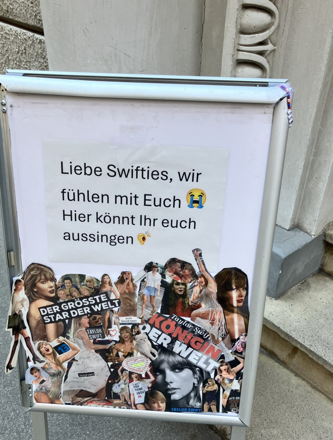
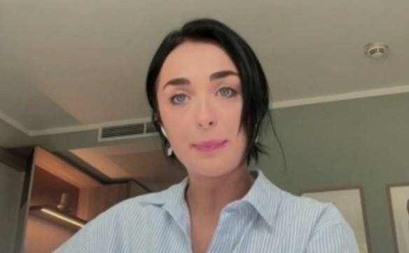
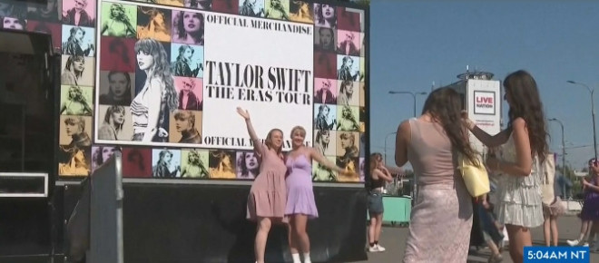

知名歌星泰勒·斯威夫特（霉霉）在奥地利维也纳的Eras巡回演唱会被取消，此前，奥地利当局宣布挫败了一起明显的恐怖袭击阴谋。不过，这些演唱会的票价昂贵，并且已经售罄。歌迷们还花费了成百上千欧元在欧洲最昂贵的航班和酒店上。数万名戴着自制友谊手链“Swifties”的粉丝因此感到沮丧，包括一批来自加拿大的迷粉。
奥地利安全官员表示，两名年轻男子计划在体育场外发动袭击，使用刀具或自制爆炸物尽可能多地杀害人群。周四上午，现场除了媒体在拍摄之外，场地空无一人。
演唱会组织者称，他们原本预计每场演唱会在体育场内有6.5万人，场馆外有3万人。
当局称，两名嫌疑人似乎受到伊斯兰国和基地组织的启发，调查人员在他们的家中发现了这些激进组织的宣传资料和其他物品。没有其他更多的细节，但看起来这二人并未与这些激进组织接触或协调行动。
主要嫌疑人19岁，他还在网上宣誓效忠现任伊斯兰国领导人。根据奥地利隐私规定，嫌疑人的名字没有公布。
消息令这位超级明星的粉丝感到震惊，许多人在社交媒体上表达了沮丧之情。一些人哀叹，他们几个月来挑选时尚服装和制作友谊手链的努力如今都白费了。带有霉霉歌曲标题或流行短语的串珠手链通常会在演唱会上与陌生人交换。


其他粉丝则在网上乞求获得霉霉下一场演唱会的门票。预计她将在8月15日至20日期间在伦敦温布利体育场举行五场演唱会，结束她创纪录的Eras巡演欧洲部分。
一些北美粉丝已经出国进行“巡演旅游”，这种模式在碧昂斯的Renaissance世界巡演期间出现。他们注意到，欧洲对票价和转售的限制更为严格，这使得在国外观看霉霉演出并不比在家附近观看更昂贵，甚至可能更便宜。
从美国前来的记者Annmarie Timmins表示，她和丈夫在晚餐后等地铁时听到了这个消息。
“我简直不敢相信，”她说。“有个女孩和她的妈妈看起来非常难过，比我还难过。我给了她一条我的手链。我想拥抱她。”
来自多伦多的Ariella Kimmel表示，听到演唱会取消的消息，她心碎了。
她说，她的演唱会门票是抽奖得到的，非常幸运。

加拿大NTV News的记者Marykate O’Neil也是霉霉的粉丝，她和家人花了22个小时的飞行时间从纽芬兰和拉布拉多抵维也纳。一路上，她遇到了很多同行者，大家都是为了演唱会而来，包括来自纽芬兰省、来自卡尔加里，还有来自新西兰等全球各地的粉丝。她说，演唱会门票是一年前就买好的，大家原本都很兴奋。
她说，很少有演唱会因为恐怖袭击阴谋而被取消的情况。不过重要的是，现在人们都是安全的。粉丝们在维也纳聚集在一起，互相交换手链。
她也表示，不过因为这件事件影响她参加之后的演唱会。

欧洲各地也迷恋这位美国超级明星。德国小镇Gelsenkirchen甚至在7月中旬的演唱会前改名为“Swiftkirchen”。
来自挪威的粉丝Fredrikke Blekastad是她第二次尝试参加霉霉的演唱会。第一次因为疫情被取消。“我们计划早早起床，排队到最前面，近距离观看她，但现在什么也不会发生了。”
其他挪威Jenny Moltubakk和Marie Hov Aanas也表达了她们的失望之情。“起初，看到消息时，我们都很震惊；我真的不敢相信，当你期待了一整年的事情突然被取消时，这感觉非常奇怪。”
“老实说，我非常失望，但我理解安全是最重要的，”她补充道。
Aanas引用了霉霉2014年的热门歌曲说：“我们必须‘Shake It Off’，实际上，我们非常感激安全措施足够严密，使他们能够揭露问题。”